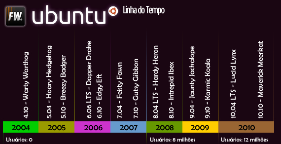
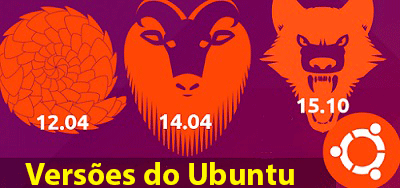

Ubuntu
O Ubuntu é uma das distribuições Linux mais populares e acessíveis, conhecida pela sua facilidade de uso e forte comunidade. Baseada no Debian, ela oferece um ambiente estável, atualizações regulares e uma ampla gama de softwares disponíveis gratuitamente. O Ubuntu é ideal tanto para iniciantes que estão migrando do Windows quanto para usuários avançados que buscam um sistema robusto para desenvolvimento, servidores ou uso pessoal. Além disso, possui diferentes versões oficiais (como Kubuntu, Xubuntu e Ubuntu MATE), permitindo que cada usuário escolha o ambiente gráfico que mais combina com suas necessidades.

Ubuntu foi lançado oficialmente em 2004 pela empresa Canonical, fundada por Mark Shuttleworth. Desde o começo, a proposta era criar uma distribuição Linux fácil de usar, diferente das distros mais técnicas da época. Isso permitiu que o Ubuntu se tornasse rapidamente uma das distribuições mais populares do mundo.
Uma curiosidade conhecida é que o Ubuntu segue um calendário fixo de lançamentos: uma nova versão a cada seis meses, tradicionalmente em abril e outubro (por isso os números, como 22.04 ou 24.10). Além disso, há versões LTS (Long Term Support) com suporte prolongado de 5 anos.


Cada versão do Ubuntu recebe um codinome composto por dois termos: um adjetivo e o nome de um animal, ambos começando com a mesma letra. Exemplos famosos incluem Trusty Tahr, Focal Fossa e Jammy Jellyfish. Esse estilo tornou-se uma marca registrada divertida e única da distribuição.